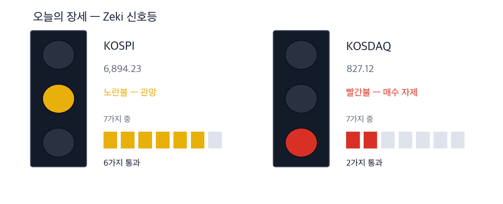
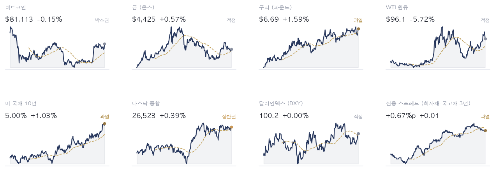
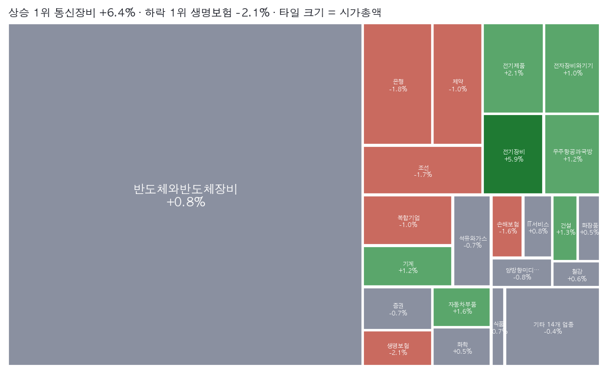
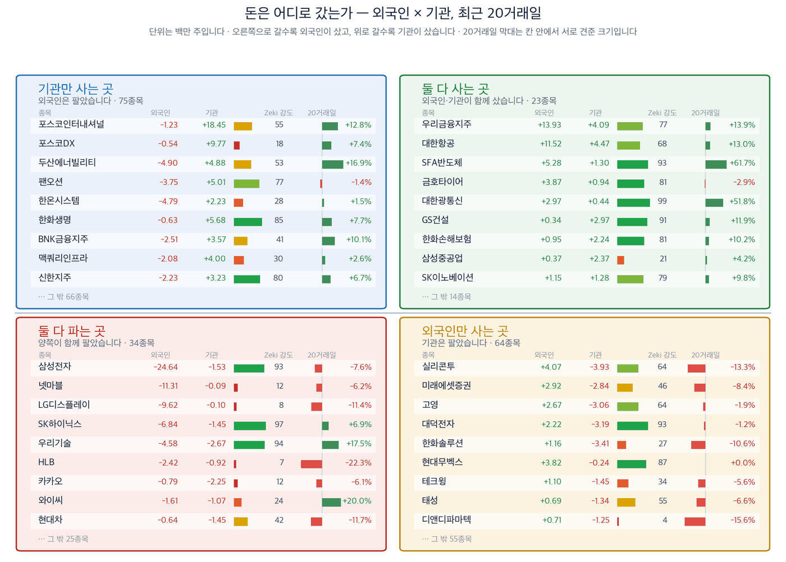
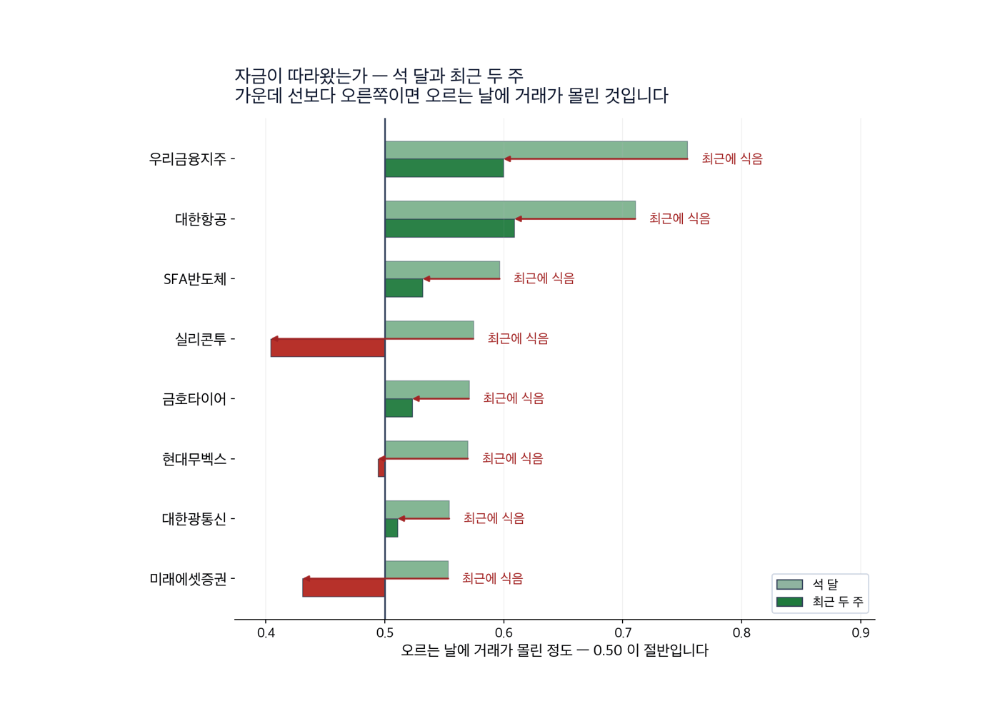
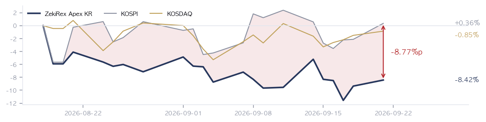

|
ZekiRex™ Apex KR — 2026년 9월 21일
오늘의 판단 · 1/3
데이터 기준 9/18 (KST) 종가 · 간밤 뉴욕 9/18 종가(현지시간) |
ZekiRex™ |
|
|
| 저희가 정한 규칙이 고른 종목과 그 성적을 매일 그대로 싣습니다. 맞았든 틀렸든 지우지 않습니다. |
|
THE REX CALL
이번 주 서울은 사흘만 열리고, 그 사흘 안에 미중 정상회담과 유엔총회가 함께 들어옵니다.
저희 기준을 넘은 16종목 가운데 한 종목도 사지 않았습니다. 포트폴리오 슬롯 100% 소진, 현금 비중 0%입니다.
오늘 반드시 알아야 할 것
1. 이번 주 국내 증시는 21일부터 23일까지 사흘만 열리고 그 뒤로 추석 연휴가 이어집니다. 지난주 코스피는 6,894.23으로 마쳤고, 그 기간 외국인은 8조7,627억원을 순매도했습니다. 기관만 8,799억원을 순매수했습니다. 거래일이 적다는 것은 같은 소식이 더 적은 날에 반영된다는 뜻입니다. 사흘 안에 큰 일정이 겹치면 방향보다 폭이 먼저 커집니다. 연휴를 앞두고 비중을 정하실 때는 연휴 동안 값을 확인할 수 없다는 점을 함께 보셔야 합니다. (머니투데이·한국거래소) 2. 트럼프 대통령과 시진핑 주석이 이번 주 백악관에서 만납니다. 베선트 재무장관과 허리펑 부총리가 20일 먼저 마주 앉아 무역과 핵심광물을 논의했습니다. 핵심광물은 이차전지와 소재 회사에 곧장 닿는 품목입니다. 합의가 나오면 소재주가 먼저 오르고, 틀어지면 같은 자리에서 먼저 내립니다. 소재나 이차전지를 들고 계시다면 이 일정이 사흘 장 안에 있다는 점을 달력에 적어 두십시오. (CBS·조선일보) 3. 우크라이나가 20일 러시아에 드론 1,000대 이상을 날렸습니다. 모스크바 시장은 수도를 겨냥한 역대 최대 공습이라고 했고, 모스크바 정유공장이 부서졌습니다. 한국은 원유를 전량 수입합니다. 공급 차질 우려로 국제 유가가 오르면 환율과 겹쳐 수입물가가 두 번 오릅니다. 항공과 해운처럼 연료가 원가의 큰 몫인 업종을 보고 계시다면 이번 주가 원가 가정을 다시 보실 자리입니다. (PBS·CBS) 4. 9월 셋째 주 전국 휘발유 평균 판매가는 L당 1,858.6원으로 18주 연속 내렸습니다. 같은 기간 두바이유는 7월 초 배럴당 60달러대에서 9월에 100달러를 넘었습니다. 국내 값과 국제 값이 따로 가는 것은 정부의 석유 최고가격제 때문이며, 정유업계는 소송을 검토하고 있습니다. 정유주를 보고 계시다면 국제 유가가 올라도 국내 판매 가격이 묶여 있다는 점이 이익으로 바로 이어지지 않는 이유입니다. (동아일보·한국석유공사) 5. 코스피가 6,000대 중후반에서 횡보하면서 은행에 맡겨 둔 돈이 올해 가장 많아졌습니다. 저축은행은 하루만 맡겨도 이자가 붙는 통장에 연 7%대를 주기도 합니다. 예금이 연 4%에서 7%를 주면 주식은 그만큼을 넘겨야 이긴 것이 됩니다. 지수가 횡보할 때 현금이 놀고 있다는 말은 이제 맞지 않습니다. 비중을 줄이신 돈을 어디에 둘지가 종목을 고르는 일만큼 값을 합니다. (동아일보)
| |
 이 그림 읽는 법 | 켜진 등 | 오늘 시장이 어떤 상태인지 알려 줍니다. 초록은 매수 우위, 노랑은 관망, 빨강은 매수 자제입니다. | | 채워진 칸 | 7가지 조건 중 몇 가지를 만족하는지입니다. 많이 만족할수록 오르는 종목이 넓게 퍼져 있습니다. | | 칸이 다 찼는데 노랑·빨강이면 | 다른 이유로 한 단계 낮춘 것입니다. 그림 아래에 그 이유를 적었습니다. |
|
최근 10거래일 국면 추이 (왼쪽이 과거) 방향 — 신호등은 빨간불입니다. 다만 코스피 자체 점검은 7가지 가운데 6가지를 통과했고 코스닥은 2가지입니다. 신호등이 그보다 늦은 것은 올라갈 때만 사흘 연속 같은 값을 요구하기 때문입니다. 저희 규칙에서 이 신호등은 매수를 막지 않습니다. 위험은 종목마다 손절가로 관리합니다.
| |
| 오늘의 조치 | | 오늘 신규 매매 없음. 규칙이 요구하지 않는 날에 거래하지 않는 것도 하나의 결정입니다. |
|
| 오늘 하나만 깊이 보면 |
|
이번 주 한국 투자자가 쥔 것은 사흘입니다
서울은 21일부터 23일까지 사흘 열리고 추석 연휴로 들어갑니다. 그 사흘에 백악관 미중 정상회담과 유엔총회가 겹칩니다. 주말에 새로 놓인 것은 둘입니다. 우크라이나가 모스크바 정유공장을 드론으로 때렸고, 베선트 재무장관과 허리펑 부총리가 정상회담에 앞서 만났습니다. 앞의 것은 원유로, 뒤의 것은 핵심광물로 서울에 닿습니다. (PBS·CBS·머니투데이) 왜 그런가. 두 경로가 같은 곳에서 만납니다. 원유가 오르면 원화로 치르는 수입 대금이 늘고, 원·달러는 9월 18일 0.65% 올라 1,390.00원으로 마감했습니다. 핵심광물은 이차전지와 소재의 원가입니다. 국내 값은 이 흐름을 그대로 받지 않습니다. 휘발유는 최고가격제 때문에 18주 연속 내렸고, 그만큼 정유사의 이익이 아니라 재정과 소비자 쪽으로 옮겨 가 있습니다. 다음에 무엇이. 23일 종가가 연휴 앞 마지막 값입니다. 그때까지 원·달러가 1,400원을 넘는지 보십시오.
그래서 우리는: 저희 장부 4종목은 GS, 지엔씨에너지, 현대해상, 타이거일렉입니다. GS는 정유를 갖고 있어 최고가격제가 직접 닿는 이름이고, 지엔씨에너지와 타이거일렉은 전력 설비 쪽이라 미중 합의가 나오면 유리한 자리에 있습니다. 반대 경우도 그대로입니다. 네 종목이 모두 사흘 안에 같은 일정을 맞고, 저희는 현금이 없어 그 사흘 동안 새로 살 수 없습니다. 지금 손절가에 가장 가까운 것은 현대해상이며 여유는 2.5%입니다.
Rex Lens™
| |
| 그 밖에 알아야 할 것 | | 22일 국회 산자위가 대미투자 1호 사업 보고를 받습니다 · 국회 산업통상자원중소벤처기업위원회가 22일 산업통상부로부터 3,500억달러 규모 대미투자의 첫 사업에 관한 보고를 받습니다. (연합뉴스 · 머니투데이) → 1호는 텍사스 엔시날 가스복합화력발전소이고 223억달러, 6.3기가와트 규모입니다. 두 나라는 수익성과 손실 분담을 두고 막바지 조율 중입니다. 발전 설비와 기자재를 만드는 회사를 보고 계시면 조건이 공개되는 날짜를 달력에 적어 두십시오. | | 10월 제조업 경기 전망 지수가 113으로 5포인트 올랐습니다 · 산업연구원이 20일 낸 전문가 조사에서 10월 제조업 업황 전망 지수는 113으로 전월 108보다 5포인트 올랐습니다. 내수는 111, 수출은 118이었습니다. (머니투데이) → 생산은 119, 투자액은 117, 채산성은 103으로 모두 기준치 100을 넘었습니다. 이 조사는 전문가의 기대이지 주문서가 아닙니다. 그래도 몇 달 뒤를 보고 설비를 늘리는 회사에는 먼저 닿는 숫자입니다. | | 앤트로픽 기업공개가 11월로, 오픈AI도 뒤로 물러났습니다 · 앤트로픽이 10월로 잡았던 기업공개를 11월로 미뤘다고 월스트리트저널과 파이낸셜타임스가 전했습니다. 오픈AI의 상장도 늦춰졌습니다. (머니투데이) → 앤트로픽의 연환산 매출은 지난해 말 약 90억달러에서 7월 650억달러가 됐습니다. 상장을 미룬 것은 3분기 숫자를 보여 준 뒤에 값을 받겠다는 뜻으로 읽힙니다. 국내에도 설비와 부품을 대는 회사가 있어, 상장이 늦어지면 그 기대도 함께 물러납니다. | | 일본이 사흘을 쉽니다 — 거래가 줄어든 자리에서 엔화 · 일본이 이번 주 사흘을 쉽니다. 일본은행이 다음 인상 속도에 관한 언질을 주지 않은 뒤라, 거래가 줄어든 자리에서 엔화가 크게 흔들릴 수 있다고 블룸버그가 전했습니다. (Bloomberg) → 엔화가 약해지면 같은 배를 짓고 같은 차를 파는 한국 회사는 값에서 제값을 못 받습니다. 조선주와 자동차주를 들고 계시면 엔-원 환율을 원-달러와 나누어 보십시오. | | 유엔총회 주간 — 트럼프·젤렌스키 회동이 예정돼 있습니다 · 각국 정상이 이번 주 유엔총회에 모입니다. 젤렌스키 대통령은 20일 트럼프 대통령과 통화한 뒤 이번 주 뉴욕에서 만나기로 했다고 밝혔습니다. (Axios · 조선일보) → 휴전 쪽으로 한 걸음이라도 나오면 국제 유가가 먼저 반응합니다. 서부텍사스산 원유는 9월 18일 96.1달러로 마쳤습니다. 항공과 해운처럼 연료 비중이 큰 업종은 이 회동의 결과를 원가로 받습니다. |
| 한국과 미국을 잇는 것: 9월 18일 뉴욕 마감이 한국 독자가 주말 사이에 얻은 가장 가까운 장입니다. 미 국채 10년물은 5.00%로 과열 구간이고, 서부텍사스산원유는 5.72% 내려 96.1달러입니다. 금리는 높은 채로 기름값이 내린 자리에서 서울의 사흘이 시작됩니다. |
|
|
시장이 오늘 한 일 · 2/3
데이터 기준 9/18 (KST) 종가 · 간밤 뉴욕 9/18 종가(현지시간) |
ZekiRex™ |
|
|
| 핵심 지표 | 코스피 6,894 +2.66% · 고점 −24.4% 9월 18일 6,894.23으로 마감했습니다. 지난주 상승분은 그 하루에 몰려 있었고, 그 종가가 이번 사흘 장의 출발점입니다. 박스권 | 코스닥 827 +0.60% · 고점 −32.5% 박스권 | 원/달러 ₩1,390.00 9월 18일 0.65% 올라 1,390.00원으로 마감했습니다. 수입 대금과 환산 이익이 같은 값에서 반대로 갈립니다. 하단권 | 국고채 3년 4.03% 4.03%입니다. 4.00% 아래로 내려가지 않아 지난 판의 조건은 뒤집히지 않았습니다. 조달 비용은 그대로 남아 있습니다. 과열 | S&P 500 7,650 신고가권 | 포트폴리오 -8.42% 현금 0% · 보유 4종목 8월 18일 시작 이후 -8.42%이고 코스피는 +0.36%입니다. 8.77%포인트 뒤에 있습니다. 좋지 않은 숫자지만 그대로 알려 드립니다. 설정 이후 |
|
Rex Pulse 거시 지표 16종 1년 추이  Rex Pulse™ — 지수·가상자산 / 통화 / 원자재 / 채권 16종, 1년 흐름과 50일 평균값(점선) · 기준 한국 9/18 종가, 뉴욕 9/20 종가(현지시간) |
미 국채 10년물은 5.00%, 2년물은 4.42%, 30년물은 5.33%입니다. 세 만기가 모두 상단에 있습니다. 달러인덱스는 100.2입니다. 서부텍사스산원유는 5.72% 내려 96.1달러, 브렌트유는 99.3달러입니다. 구리는 파운드당 6.69달러로 과열 구간입니다. 기름이 내리는데 구리가 과열에 있다는 것은 아직 수요가 꺾이지 않았다는 뜻입니다. 그래서 보실 것은 2가지입니다. 먼저 10년물이 5% 위에 머무는지입니다. 다음은 구리가 이 자리를 지키는지입니다. 둘이 함께 유지되면 원가는 높고 수요는 남는 구간이 이어집니다. |
업종 히트맵 — 오늘의 상승·하락 지도  색은 당일 등락(짙을수록 큼), 타일은 시가총액입니다. 상단에 당일 상승·하락 1위가 적혀 있고, 큰 칸이 움직인 날이 지수가 움직인 날이라는 뜻입니다 — 아래 리더십 순위(추세의 힘)와 함께 읽으십시오. |
| 리더십 — 업종 강세 순위 | | 오늘은 업종 강세 순위를 싣지 않습니다. 저희 기준을 넘은 종목이 적어 업종마다 최소 인원을 채우지 못했습니다. 표본이 모자란 순위는 숫자가 있어도 뜻이 없으므로, 지어내지 않고 비워 둔 채 그 사실을 적습니다. | | 수급 — 외국인·기관은 어느 쪽이었나 |  이 그림 읽는 법 | 점 하나 | 종목 하나입니다. 가로·세로 위치가 두 값을 그대로 나타내고, 가운데 가로·세로로 그어진 두 선이 기준선입니다. 네 귀퉁이의 이름표가 그 칸의 뜻입니다. | | 점 크기 | 최근 20거래일 등락폭입니다. 오르든 내리든 크게 움직였으면 큰 점입니다. | | 점 색 | Zeki 강도입니다. 초록일수록 주가가 시장에서 강합니다. | | 30종목만 | 이름이 겹치면 못 읽기 때문입니다. 가운데 몰린 나머지는 움직임이 거의 없는 종목들이라 뺐습니다. |
 이 그림 읽는 법 | 이 그림이 말하지 않는 것 | 같은 기간의 수급과 등락을 나란히 놓은 것입니다. 앞으로는 이렇습니다 — 외국인과 기관이 사면 하루 이틀은 실제로 오릅니다. 그 다음 되돌립니다. 그리고 그 폭이 세금과 수수료보다 작습니다. 그래서 이 그림을 보고 사고파시면 손해입니다. 둘 다 사들이는 것을 보고 그 다음 날 사면, 20거래일 뒤에 올라 있을 확률은 48%입니다 — 아무 종목이나 골랐을 때(49%)와 같습니다. 저희가 503종목 17년치로 쟀습니다. | | 네 칸 | 가로와 세로 두 값이 각각 기준선을 넘었는지로 넷을 가릅니다. 오른쪽 위는 둘 다 넘은 곳, 왼쪽 아래는 둘 다 못 넘은 곳, 나머지 두 칸은 한쪽만 넘은 곳입니다. 칸 이름이 그 칸에 든 종목의 상태를 한 문장으로 적어 둔 것입니다. | | 가운데 두 칸 | 두 기간을 비교하는 자리입니다. 글자 A~E가 있으면 이 업계가 쓰는 표준 등급으로, A는 강한 매수, B는 매수 우세, C는 매수와 매도가 반반, D는 매도 우세, E는 강한 매도를 뜻합니다(전체를 다섯으로 나눈 순위라 A가 상위 20%입니다). 숫자가 있으면 그 기간에 산 양에서 판 양을 뺀 것입니다. | | 칸마다 9종목 | 그 칸에서 움직임이 가장 큰 순서입니다. 나머지는 칸 아래에 몇 종목인지만 적었습니다. 옆 산점도가 이름을 다는 종목이 바로 이 9종목씩입니다. | | 20거래일 막대 | 0을 가운데 두고 오른쪽이 상승, 왼쪽이 하락입니다. 길이는 같은 칸 안에서만 서로 비교하십시오 — 칸마다 기준이 다릅니다. | | Zeki 강도 | 1~99 순위입니다. 막대가 길수록, 초록에 가까울수록 그 종목의 주가가 시장에서 강합니다. |
 이 그림 읽는 법 | 막대 둘 | 위가 석 달, 아래가 최근 두 주입니다. 같은 종목의 두 기간을 나란히 놓았습니다. | | 가운데 선 | 0.50 입니다. 오른쪽이면 오르는 날에 거래가 더 몰렸고, 왼쪽이면 내리는 날에 몰렸습니다. | | 화살표 | 석 달에서 두 주로 가는 방향입니다. 오른쪽으로 가면 최근에 더 들어온 것이고, 왼쪽이면 식은 것입니다. | | 맨 오른쪽 글씨 | 그 방향을 말로 적은 것입니다 — 「최근에 더 들어옴」이면 자금이 이어지는 중입니다. |
이름을 확인한 종목 전부를 넷으로 갈랐습니다. 오른쪽으로 갈수록 외국인이 샀고, 위로 갈수록 기관이 샀습니다. 지금 누가 사고 있는지를 보여 주는 자리이지 무엇을 사라는 자리가 아닙니다. 업종 — 값의 강세와 돈의 흐름을 나란히 돈이 먼저 온 곳 — 값은 아직입니다 | 업종 | 강세 | 자금 | 20거래일 |
|---|
| 은행 | 21 | 2 | +2,276,134주 | | 손해보험 | 12 | 1 | +3,814,006주 | | 반도체와반도체장비 | 2 | 3 | +734,165주 |
강세 순위 — Zeki 강도(12개월 가중)로 세운 순위입니다. 최근 5회차를 평균해 하루치 흔들림을 걷어냈습니다. 자금 순위 — 20거래일 순매수로 세운 순위입니다. 값이 아니라 **돈이 들어온 양**을 봅니다. 공동 순위 — 값이 같으면 같은 순위를 줍니다. 억지로 가르지 않습니다. 두 순위가 어긋나면 — 그 자리가 볼 만합니다. 돈이 먼저 오면 값이 아직인 것이고, 값이 먼저 세면 돈이 빠지는 중일 수 있습니다. |
|
|
우리가 한 일 · 3/3
데이터 기준 9/18 (KST) 종가 · 간밤 뉴욕 9/18 종가(현지시간) |
ZekiRex™ |
|
|
| 종목 | 비중 | 평가금액 | 평가손익 | 현재가 | 손절가 | 여유 | 보유 기간 | 다음 이벤트 | | 현대해상 | 24% | ₩223,559,600 | −₩13,395,100 | ₩48,400 | ₩47,196 | +2.6% | 9일 | — | | 타이거일렉 | 23% | ₩212,400,000 | −₩4,425,000 | ₩72,000 | ₩67,620 | +6.5% | 3일 | — | | GS | 25% | ₩226,974,000 | −₩4,380,200 | ₩114,000 | ₩106,904 | +6.6% | 27일 | — | | 지엔씨에너지 | 28% | ₩252,882,000 | +₩15,922,200 | ₩54,000 | ₩46,552 | +16.0% | 9일 | — | | 현금 | — | ₩3,150 | 아직 투자하지 않은 돈입니다 |
계좌 요약 | 시작 자본 | ₩1,000,000,000 | 2026-08-18 설정 | | 실현 손익 | −₩77,903,150 | 판 종목에서 확정된 금액 | | 평가 손익 | −₩6,278,100 | 들고 있는 종목의 장부상 손익 | | 현재 평가액 | ₩915,818,750 | 시작 대비 −8.42% | | 최고 평가액 | ₩1,000,000,000 | 지금은 고점 대비 −8.42% |
시작 자본에 실현 손익과 평가 손익을 더하면 현재 평가액이 됩니다. |
계좌 개시(8/18) 이후 — 하루보다 이쪽이 중요합니다 | 계좌 | −8.42% | | — | | 코스피 | +0.36% | | −8.77%p | | 코스닥 | −0.85% | | −7.57%p |
8/18부터 9/18까지, 22거래일입니다. |
| Rex Korea Best — 이 뉴스레터에 실린 이름들의 성적표 | 무엇인가. 이 뉴스레터에 이름이 오른 회사들을 모아 만든 지수입니다. 관문을 통과한 종목과 포트폴리오 보유 종목을 합쳐 최대 스물아홉 곳까지, 모두 같은 비중으로 담습니다. 명단은 판이 나가는 날 그대로 적어 두고 뒤에 고치지 않습니다 — 지나고 나서 좋았던 것만 골라 넣으면 어떤 성적표도 좋아 보이기 때문입니다. 무엇을 위한 것인가. 저희가 지면에 적은 이름이 실제로 값을 하는지 숫자로 남기기 위해서입니다. 그래서 같은 기간 코스피 · 코스닥과 나란히 놓고, 사고파는 비용을 뺀 뒤의 숫자도 함께 싣습니다. 숫자 읽는 법. Zeki 강도는 같은 기간 다른 주식과 견준 주가의 힘을 100점 만점으로 매긴 것입니다. 100점에 가까울수록 많이 오른 쪽입니다. 아닌 것. 살 수 있는 상품이 아니고, 추천도 아니며, 저희 계좌의 성적도 아닙니다. | Rex Korea Best — 지수 출범 이후 (9/14→9/18) | Rex Korea Best | −1.12% | | — | | 코스피 | +3.14% | | −4.25%p | | 코스닥 | +2.52% | | −3.64%p |
4거래일 · 비용을 뺀 값입니다. 비용 전은 −0.98%입니다. 오른쪽은 우리가 앞선 폭입니다. | 지수 대비 −4.25%p. 4회차째입니다. 저희가 미리 정한 신뢰 문턱은 120회차이고 지금은 그 3% 지점입니다. 이 숫자로는 아직 잘한다고도 못한다고도 말할 수 없습니다. |
4거래일치입니다. 짧은 구간은 운과 실력을 가르지 못하므로 120거래일이 쌓이기 전까지는 이 숫자로 판단하지 마십시오. 많이 오른 쪽 | 지엔씨에너지 119850 | +5.27% — 평소보다 훨씬 많이 거래됐습니다. 값은 1년 최고가에 3% 안쪽까지 왔습니다. | | 샘씨엔에스 252990 | +3.03% — 값은 지난 1년 중 가장 높습니다. Zeki 강도는 91점에서 95점입니다. | | 롯데렌탈 089860 | +0.83% |
많이 내린 쪽 | 하나금융지주 086790 | −3.90% | | DB손해보험 005830 | −3.10% — 평소보다 훨씬 많이 거래됐습니다. | | 신한지주 055550 | −3.07% |
새로 들어온 종목 | 한국콜마 161890 | 저희 조건을 새로 갖춰 명단에 올랐습니다 |
빠진 종목 | 팬오션 028670 | 9월 14일부터 4거래일, −4.63%. 저희 조건을 더는 갖추지 못했습니다 |
|
| Rex 25™ — 당일 등락률 전체 순위 | | 01 ● 119850 지엔씨에너지+5.47% | | 02 252990 샘씨엔에스+2.85% | | 03 089860 롯데렌탈+1.14% | | 04 098120 마이크로컨텍솔+0.76% | | 05 ● 219130 타이거일렉+0.28% | | 06 073240 금호타이어+0.14% | | 07 ● 078930 GS-0.18% | | 08 192820 코스맥스-0.36% | | 09 317400 자이에스앤디-1.67% | | 10 161890 한국콜마-1.69% | | 11 ● 001450 현대해상-1.73% | | 12 105560 KB금융-2.23% | | 13 055550 신한지주-2.63% | | 14 005830 DB손해보험-2.73% | | 15 000370 한화손해보험-2.76% | | 16 086790 하나금융지주-3.47% |
| 저희 기준을 넘은 16종목 가운데 12종목은 자리가 없어 사지 못했고, 2종목은 이미 들고 있어 추가로 사지 않았습니다. 규칙이 고른 것과 실제로 산 것이 갈리는 자리가 여기입니다. 명단이 길어진 것은 시장이 넓게 올라왔다는 뜻이지 살 것이 많다는 뜻이 아닙니다. 사흘 장에서는 자리가 비어도 채울 날이 3일뿐이라는 뜻입니다. | | 16종목뿐입니다. 25자리 가운데 오늘 조건을 만족한 것이 16개라는 뜻이고, 빈자리는 채우지 않습니다. ● 표시가 우리 보유 종목입니다. 순서는 등락률만 따릅니다 — 하락 상위에 보유 종목이 있어도 그 자체가 매도 신호는 아닙니다. 매도는 −8% 손절과 오실레이터 이탈, 둘뿐입니다. |
| 관문을 통과한 종목 — 자리가 없어 담지 못한 이름들 | | 금융 5 | | 055550 신한지주 | RS 82 | ₩110,600 | | 005830 DB손해보험 | RS 82 | ₩187,800 | | 000370 한화손해보험 | RS 82 | ₩8,080 | | 086790 하나금융지주 | RS 81 | ₩133,100 | | 105560 KB금융 | RS 80 | ₩175,100 | | 소비 3 | | 161890 한국콜마 | RS 94 | ₩145,600 | | 192820 코스맥스 | RS 90 | ₩273,500 | | 073240 금호타이어 | RS 82 | ₩7,040 | | 반도체·하드웨어 2 | | 098120 마이크로컨텍솔 | RS 96 | ₩53,000 | | 252990 샘씨엔에스 | RS 95 | ₩17,330 | | 산업재·인프라 2 | | 317400 자이에스앤디 | RS 97 | ₩10,080 | | 089860 롯데렌탈 | RS 90 | ₩48,850 |
| 왜 못 담았나. 자리는 넷뿐이고 각 자리에 총자산 25%가 들어갑니다 — 한 종목이 −8%에 걸려도 계좌 전체로는 2% 손실이 되도록 맞춘 구조입니다. 자리를 비우는 길은 손절과 오실레이터 이탈 둘뿐이라, 더 좋은 후보가 나와도 갈아타지 않습니다.
이 목록이 뜻하는 것. 16개가 조건을 통과했고 그중 보유 중인 종목을 뺀 12개가 대기 중입니다. RS는 80~97입니다. 우리 4자리는 반도체·하드웨어 2, 에너지·정유 1, 금융 1로 나뉘어 있고 가장 큰 쪽이 반도체·하드웨어입니다 — 그래서 하루 등락이 지수와 평균 2.2%p 벌어졌고, 가장 크게 갈린 9/7 세션에는 코스피 보다 5.6%p 더 내렸습니다. 자리가 하나 열리면 이 순서의 맨 위부터 검토합니다. 매수 추천이 아닙니다. |
| 보유 비중 — 하한 8% / 진입 25% | | 지엔씨에너지 11985027.6% | | GS 07893024.8% | | 현대해상 00145024.4% | | 타이거일렉 21913023.2% |
25%는 진입 시점의 크기이지 보유 한도가 아닙니다. 오른 종목을 크다는 이유로 줄이지 않습니다. |
| Rex Radar™ — 앞으로의 일정 | | 이번 주의 핵심 — 일정이 많아서가 아니라 값을 확인할 날이 적어서 어려운 주입니다. | 9월 21일(월)~25일(금) 중 · 미국 워싱턴 (현지시간) 백악관 미중 정상회담핵심무역과 핵심광물이 의제입니다. 핵심광물은 이차전지와 소재의 원가로 곧장 옵니다. 볼 숫자: 이번 주 마지막 거래일인 9월 23일 종가에 코스피가 6,894.23을 지키는지 보십시오. | 9월 22일(화) · 서울 국회 산자위, 대미투자 1호 사업 보고 청취핵심3,500억달러 대미투자의 1호는 텍사스 엔시날 가스복합화력발전소입니다. 볼 숫자: 223억달러·6.3기가와트 조건에서 손실 분담 비율이 공개되는지 보십시오. | 9월 24일(목)부터 · 서울 추석 연휴 — 23일 종가가 연휴 앞 마지막 값입니다핵심연휴 동안 해외 시장은 열리고 서울은 닫혀 있습니다. 볼 숫자: 23일 종가에서 저희 4종목의 손절까지 여유가 2.5% 아래로 좁아지는지 보십시오. |
|
|
| 한 줄 정리: 이 뉴스레터는 토요일 주간판과 같은 9월 18일 종가에 붙어 있습니다. 그 사이 문을 연 시장이 없기 때문입니다. 그래서 오늘 판은 지난주 결산을 되풀이하지 않고, 주말에 새로 생긴 일과 이번 주에 벌어질 일만 다룹니다. 코스피는 9월 18일 6,894.23으로 마감했습니다. 원·달러와 국고채 금리 칸은 각 칸에 적힌 기준일을 따릅니다. |
|
포트폴리오 누적 수익률 대 벤치마크  지금 지수와의 차이 — 코스피 대비 −8.77%p · 코스닥 대비 −7.57%p 8월 18일 시작 이후 저희 장부는 -8.42%이고, 코스피는 +0.36%, 코스닥은 -0.85%입니다. 두 지수보다 뒤에 있고, 좋지 않은 숫자지만 그대로 알려 드립니다. 종료된 매매 6건 가운데 이익으로 끝난 것은 1건입니다. 지금 손절가에 가장 가까운 것은 현대해상이며 여유는 2.5%입니다. 이 여유가 좁다는 뜻이며, 연휴 전에 확인할 날은 3일뿐입니다. 그래서 지수보다 현대해상의 손절가를 먼저 봐야 합니다. |
| 2026-09-18 종가 기준 심사 대상 618종목 가운데 16종목이 조건을 통과했습니다. 조건 통과는 매수 추천이 아닙니다. |
| 출처: 한국거래소(KRX) 공시 시세, 15:30 종가 · 서울외국환중개 고시환율(네이버 금융) · 야후 파이낸스 · 국고채·회사채 3년 금리: 네이버 금융 |
|
본 리포트는 정보 제공 목적이며 개별 투자 자문이 아닙니다. ZekiRex™ Apex KR는 10억 원 규모의 모의 포트폴리오를 규칙 기반으로 운용합니다. 실제 계좌도, 주문도, 사고판 일도 없습니다. 표시된 성과에는 수수료와 세금, 매매 시 가격 미끄러짐이 반영되지 않았습니다. 종목 자료에는 상장폐지된 회사가 빠져 있습니다. 살아남은 회사만 세는 셈이라 성과가 실제보다 높게 나옵니다. 과거의 성과는 미래를 보장하지 않으며, 투자에는 원금 손실 위험이 따릅니다. |
| This is the Rex Way, ZekiRex™ |
|